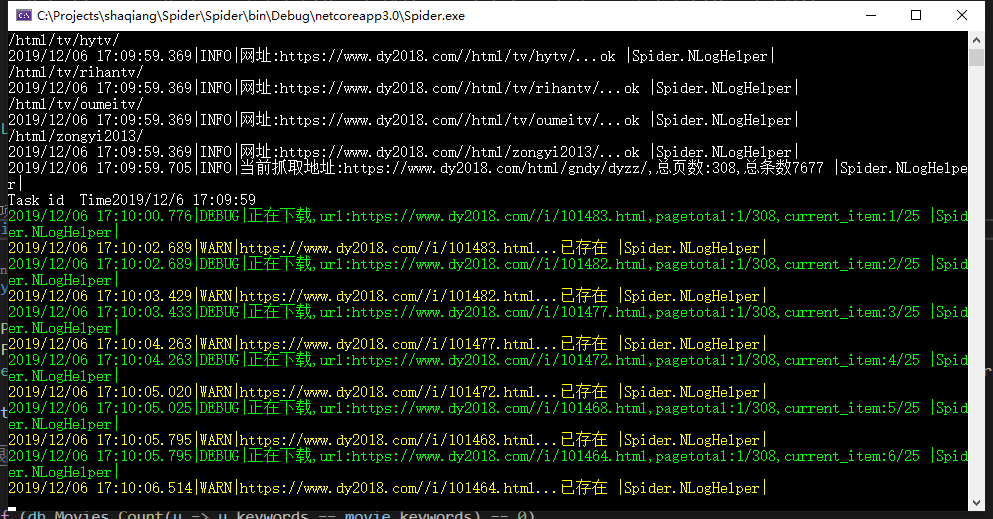
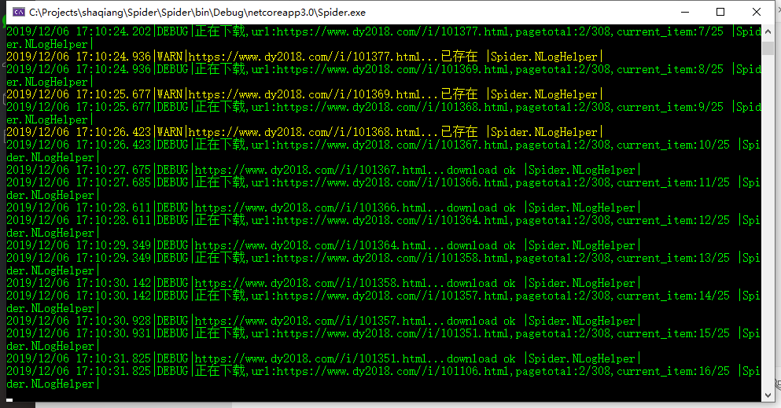
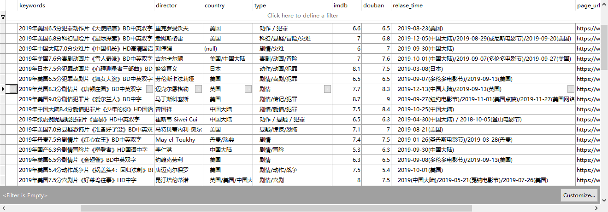

今天分享的这个，算是个经历吧，对了，提前说一下，这个分享也是基于.net core的，以后分享的项目，只要我没转语言，基本就都是.net core了。
首先，我为什么要薅人家资源？事情是这个样子的，我呢最近想看看电影，然后呢我也不知道我想看的电影叫什么名字，就大概知道想看什么样的。比如指标包括，类型，演员，导演，豆瓣评分，imdb评分等等。
然后呢，我发现现在视频网站的功能支撑不了我的想法，我也深知不是这些大厂做不了，而是因为有一些版权啊，收费啊等等原因，他们不能做这个东西。而有一些处在灰色产业带的网站，可能没有这些问题，但是呢，他们又不做这些丰富的功能。
所以就想着自己搞一个出来。
然后这个想法就在我的脑子里开花结果，慢慢的，我的需求从简单的只想随心所欲的看看电影，变成了，我想做一个类似小爱同学的那种智能助手，通过语音或者文字，来说出我想看什么电影，然后自动下载，自动播放，我甚至连这个小助手的名字都想好了，傻强！
再然后，就开始实施了
首先，我得有电影资源吧，电影天堂这只肥羊最合适了，资源更新快，可以说是大而全了。
所以，
第一步很简单，就是爬数据，做个爬虫，把电影天堂上的资源全给薅下来，同时完成简单的数据清洗工作；
第二步就是数据整理分类，利用ElasticSearch构建数据搜索引擎，并接入百度语音API实现语音和文字之间转换，搭建检索平台；
第三步就是利用t-get或者aira2等工具，实现磁力链接或者ftp资源的自动下载。
好了，大概的思路就是这样，目前进行到了第一步，
爬虫其实大家都很熟悉了，需要说明的是，很多网站都有反扒的机制，需要具体问题具体分析，同时需要根据需要，利用代理ip来防止爬虫被封。这些我就不多说了。
我这里主要用到的技术还是正则表达式，此外用Nlog做的日志输出，Polly做的降级处理，AngleSharp做的dom分析，redis做的缓存，数据库用的是sqlite（第一次用sqlite，感觉很棒！）
另外，在下载的部分，本来是想做成多线程的，但现阶段并发控制没有做好，设计上还有欠缺，考虑到第一步只是一次性操作，后续增量更新，所以暂时没有完成这一部分，但好的设计，是要有这部分的。
我先把灌一下代码吧，很简单。
1 | /// <summary> |
咳咳，首先呢，这几段代码都是初始的，基本上写完了没有做整理，大家也看到了，上边的代码，对异常的处理有的是做的降级，有的还是try catch，然后最后一段没有分享，主要是没有找到合适的优化方法，有大量的正则匹配在里面，就没分享。
其实主要是这个经历很令我兴奋，所以就没忍住写个博客分享一下，此次分享代码相对粗鄙，各位见笑了，待后续功能全部完成后，会将全部工程文件分享出来，这次这个也分享一下吧，虽然还只是个一阶段的半成品https://gitee.com/Tony_df/shaqiang.git。欢迎交流。
在贴几张效果图。


